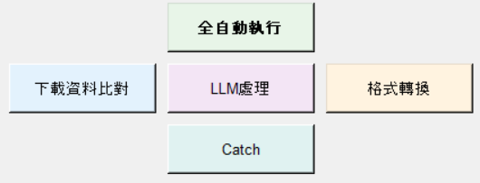

← 回專案作品

自動化工作流程
一鍵自動建案：把一筆維修案件從原始下載一路帶到建好 JIRA 單——下載、比對、補資料、LLM 文本處理、格式轉換、上傳。
PythonTkinterSelenium
JIRA APIconcurrent.futuresLLMPyInstaller
一鍵自動建案：把一筆維修案件從原始下載一路帶到建好 JIRA 單——下載、比對、補資料、LLM 文本處理、格式轉換、上傳。
從客戶維修紀錄建一張 JIRA 單，要走一長串人工流程：下載資料、比對、補抓資訊、把文本改寫成標準格式、再建案。單案約 30 分鐘，且容易出錯。
